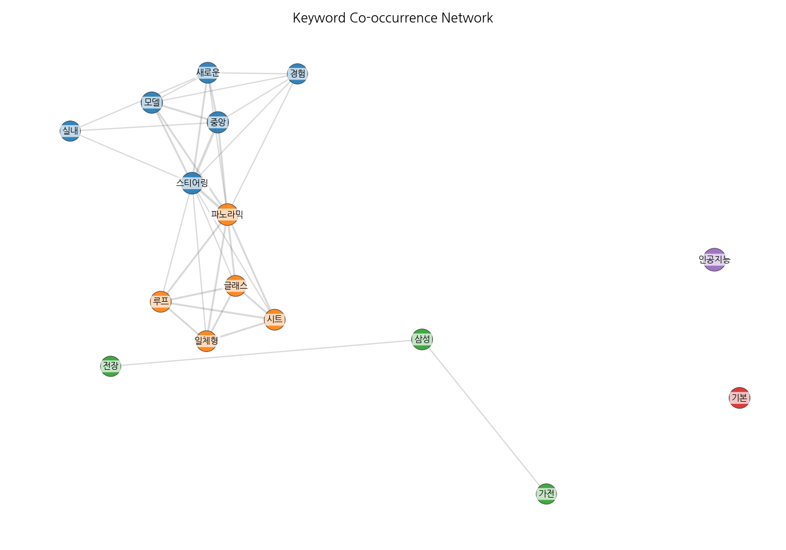
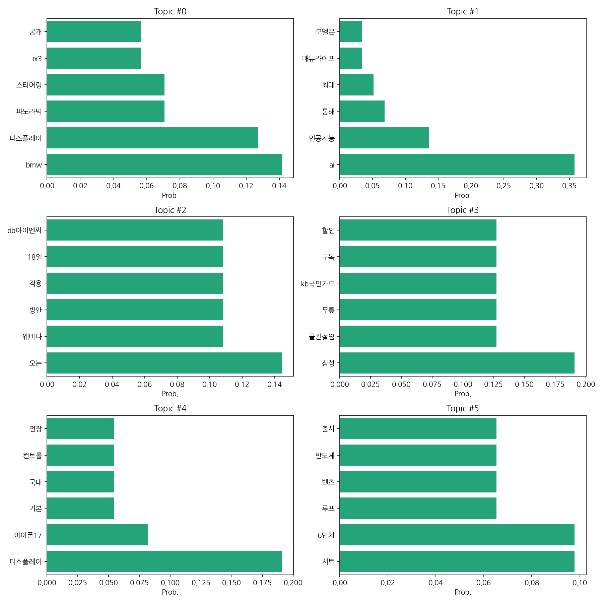

이번 기간 핵심 토픽과 키워드, 주요 시사점을 요약합니다.
핵심 맥락: 이번 데이터는 자동차 업계의 신차 발표 및 기술 동향(BMW ix3, 벤츠 신차, 아이폰17 디스플레이 등), 인공지능(AI) 기술의 활용 및 전망, 그리고 특정 기업의 웨비나 개최 및 서비스 소식(DB아이엔씨)을 주요 내용으로 다루고 있습니다. 삼성전자의 가전제품 할인 소식과 골관절염 관련 내용도 포함되어 있으며, 전반적으로 기술, 자동차, 금융, 의료 분야의 뉴스를 망라하고 있습니다. 각 토픽은 상호 연관성이 낮아 다양한 분야의 뉴스를 반영하고 있음을 보여줍니다.
최근 변화/스파이크: 데이터는 2025년 9월 8일 단 하루의 기사 수(20건)만을 보여주고 있습니다. 따라서 장기적인 추세 변화나 스파이크를 파악하기에는 데이터가 부족합니다. 더 많은 기간의 데이터가 필요합니다.
실무 인사이트:
다양한 분야 뉴스 모니터링 강화: 자동차, AI, 금융, 의료 등 다양한 분야의 뉴스를 지속적으로 모니터링하여 시장 트렌드를 파악하고, 각 분야의 핵심 키워드를 추출하여 관련 기사를 효율적으로 수집하는 시스템을 구축해야 합니다.
| Rank | Keyword | Score |
|---|---|---|
| 1 | 디스플레 | 4.272 |
| 2 | 인치 | 3.246 |
| 3 | 인공지능 | 2.473 |
| 4 | 경험 | 1.853 |
| 5 | 삼성 | 1.82 |
| 6 | 중앙 | 1.778 |
| 7 | 파노라믹 | 1.775 |
| 8 | 일체형 | 1.773 |
| 9 | 아이엔씨 | 1.735 |
| 10 | 모델 | 1.584 |
| 11 | 시트 | 1.559 |
| 12 | 가전 | 1.429 |
| 13 | 스티어링 | 1.415 |
| 14 | 실내 | 1.4 |
| 15 | 기본 | 1.25 |



핵심 맥락: 이번 데이터는 자동차 업계의 신차 발표 및 기술 동향(BMW ix3, 벤츠 신차, 아이폰17 디스플레이 등), 인공지능(AI) 기술의 활용 및 전망, 그리고 특정 기업의 웨비나 개최 및 서비스 소식(DB아이엔씨)을 주요 내용으로 다루고 있습니다. 삼성전자의 가전제품 할인 소식과 골관절염 관련 내용도 포함되어 있으며, 전반적으로 기술, 자동차, 금융, 의료 분야의 뉴스를 망라하고 있습니다. 각 토픽은 상호 연관성이 낮아 다양한 분야의 뉴스를 반영하고 있음을 보여줍니다.
최근 변화/스파이크: 데이터는 2025년 9월 8일 단 하루의 기사 수(20건)만을 보여주고 있습니다. 따라서 장기적인 추세 변화나 스파이크를 파악하기에는 데이터가 부족합니다. 더 많은 기간의 데이터가 필요합니다.
실무 인사이트:
다양한 분야 뉴스 모니터링 강화: 자동차, AI, 금융, 의료 등 다양한 분야의 뉴스를 지속적으로 모니터링하여 시장 트렌드를 파악하고, 각 분야의 핵심 키워드를 추출하여 관련 기사를 효율적으로 수집하는 시스템을 구축해야 합니다.
| Idea | Target | Value Prop | Score |
|---|---|---|---|
| AI 기반 다차원 뉴스 분석 플랫폼 | 자동차, 금융, IT, 의료 등 다양한 산업의 대기업 홍보/마케팅 부서, 시장조사 기관, 투자사 (직원 수 100명 이상) | AI 기반으로 다양한 분야의 뉴스를 실시간 모니터링하고, 핵심 키워드 추출 및 감성 분석을 통해 시장 트렌드를 정확하게 예측합니다. 장기간 데이터 분석을 통해 미래 예측의 정확도를 높이고, 맞춤형 보고서를 제공하여 의사결정을 지원합니다. 경쟁사 대비 정확도 높은 AI 알고리즘을 사용합니다. | 4.5 |
| 자동차 업계 기술 동향 분석 서비스 | 자동차 제조사, 부품 공급업체, 자동차 연구소 (직원 수 50명 이상) | BMW, 벤츠 등 주요 자동차 제조사의 신차 발표 및 기술 동향을 실시간으로 모니터링하고 분석하여 제공합니다. 경쟁사 기술 분석 및 시장 경쟁력 강화 전략 수립을 지원합니다. 다양한 데이터 시각화 기능을 통해 정보 접근성을 높입니다. | 4.0 |
| AI 기반 자동차 부품 수요 예측 시스템 | 자동차 부품 제조 및 공급업체 (직원 수 100명 이상) | AI 기반 머신러닝 알고리즘을 활용하여 자동차 부품 수요를 정확하게 예측합니다. 시장 변화에 대한 빠른 대응을 지원하고, 재고 관리 및 생산 계획의 효율성을 높입니다. 예측 정확도 향상으로 불필요한 비용을 절감하고, 생산 차질을 최소화합니다. | 3.8 |
| 맞춤형 가전제품 추천 플랫폼 | 가전제품 유통업체, 온라인 쇼핑몰, 가전제품 제조사 (직원 수 50명 이상) | AI 기반 개인 맞춤형 가전제품 추천 서비스를 제공합니다. 소비자의 라이프스타일, 사용 패턴, 선호도 등을 분석하여 최적의 제품을 추천합니다. 제품 정보 비교 및 분석 시간을 단축하고, 소비자의 구매 만족도를 높입니다. | 3.5 |
| 의료 정보 플랫폼 | 골관절염 환자, 의료기관, 의료 정보 제공 업체 | 골관절염 환자를 위한 신뢰할 수 있는 의료 정보 플랫폼을 제공합니다. 질병 정보, 치료법, 관리법 등을 제공하고, 개인별 맞춤형 정보를 제공합니다. 의료 전문가와의 상담 기능을 통해 질병 관리에 도움을 줍니다. | 3.0 |